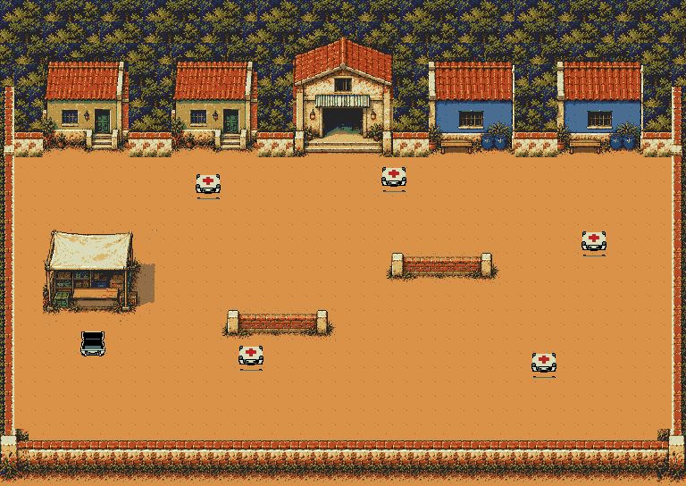
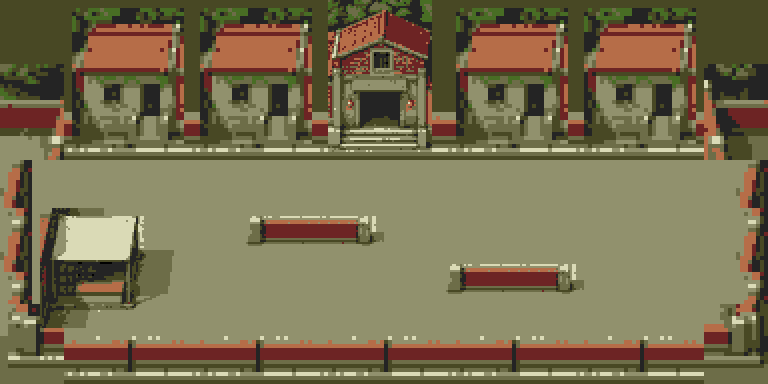

Versão anterior do cenário. A feira urbana da fase 7 é a versão ativa no jogo.
Fase 7 · O pátio do Último Chão
A área útil passou de 176 para304 px de altura (+73%). A fase mantém cinco cargas e uma entrega por viagem, com casas inteiras, abrigo reconhecível, depósito, barricadas com contorno e limites contínuos. A composição já está integrada no jogo.
Acesso: FASE TESTE → Campanha → 7.
Mundo:768×544 pxCampo:304 px na verticalObjetivo:5 cargasReserva:634/640 tiles
Composição nativa inteira
Reconstrução dos mesmos padrões e da mesma paleta usados pela ROM. Mostra as cinco fontes e o depósito em seu estado inicial. O desenho distribui os objetos conforme a missão; a posição dos blocos do padrão original não é uma posição fixa de obstáculos.

Comparar com a composição anterior
Antes:768×384 px;176 px úteis. A arte sofria uma redução global em blocos 4×4 e as cargas inferiores deixavam pouco espaço para aproximação.

Enquadramento estático, com 24 px reservados para o HUD. As capturas abaixo são do jogo em execução.
Playtest na ROM
Capturas do Genesis Plus GX. Entrada e interações por controle. Os cinco percursos isolam inimigos para verificar a missão sem alterar posições ou estados durante as viagens. O ensaio de carga e o combate natural são medidos separadamente.
 Entrada · Telhados completos e espaço para chegar
Entrada · Telhados completos e espaço para chegar Carga 1 · Coleta e transporte reais
Carga 1 · Coleta e transporte reais Carga 4 · Aproximação e contorno da barricada
Carga 4 · Aproximação e contorno da barricada Cinco entregas · Objetivo concluído
Cinco entregas · Objetivo concluído Limite inferior · Muro e apoio inteiros
Limite inferior · Muro e apoio inteiros Carga máxima · Depósito
Carga máxima · DepósitoMemória, composição e testes
O desenho completo é convertido em módulos inteiros de casas, abrigo, depósito, barricada e materiais. Paredes e chão se repetem sem fragmentos de objetos. Usa a mesma paleta RGB333 da fase 1; não aplica a redução global em blocos 4×4.
1.048 padrões na ROM; no máximo 515 por janela conservadora. O cache reserva 560 posições e as seis poses das cargas usam 74: 634/640 tiles, 20.288 bytes de VRAM, com seis livres. Gráficos: 33.536 bytes na ROM; mapa: 13.056 bytes; controle do cache: 6.576 bytes de heap, liberados na pausa. A imagem inteira não fica carregada como uma textura única.
Passaram em NTSC/PAL: pixels visíveis de cenário e cargas, 36 vistas nos dois sentidos e na vertical, colisões de depósito/barricadas, limites, coleta que libera a base do baú, aproximação das cinco cargas, cinco entregas completas e restauração após pausa. Todas as 2.889 posições livres da malha estão conectadas. As fases 8, 13A/13B e os 19 acessos da campanha passaram nas regressões compartilhadas.
Desempenho medido, com ressalva no NTSC. Quatro inimigos e seis tiros em cada grupo, 20 s por trecho, mantendo IA e trajetórias ativas. O ensaio protege a vida e repõe somente tiros inativos. O trecho do depósito não mantém 60 FPS no NTSC.
| Trecho | NTSC · FPS | PAL · FPS |
|---|
| Casas | 59.800 | 50.000 |
| Depósito | 57.750 | 50.000 |
| Área inferior | 59.900 | 50.000 |
Combate natural separado: movimento e tiro automatizados por até 30 s, sem concessões de vida/IA. A dificuldade humana e um transporte completo sob combate não foram aprovados. Hardware físico não testado.
Fonte, prompt e fluxo de produção
Imagem-mestra produzida com ImageGen integrado, usando a igreja original como estilo e a favela anterior como referência. A montagem final repete duas casas e um abrigo completos para limitar o conjunto visível. A primeira conversão inteira exigia 788 padrões por janela; foi substituída pela composição modular de 515. As peças têm apoio e sombra completos.
ROM verificada:a3a5f6bf18b6fde500edaaca0a8632512c3c275b26d529a1f3a96c0a11e54234